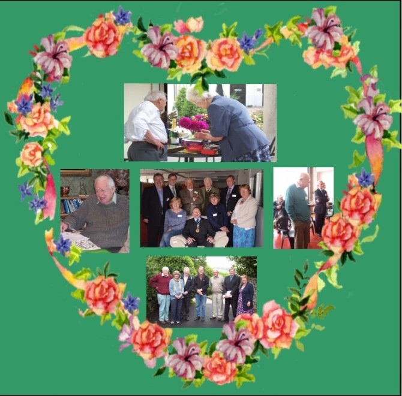

In memory of Jim Michelmore
In May 2015 we received the devastating news that Jim Michelmore, founding member of Turntable, had passed away.
In the 90’s, Jim’s firm (Michelmores Solicitors) was based in Cathedral Yard and his office overlooked the Green. From there he could see how much poverty and homelessness there was around and determined to do something to help. The result was that Turntable, St Petrocks, Exeter Homes Committee and the Palace Gate Project were set up under Exeter Community Umbrella.
In the following 22 years, Jim worked so hard for Turntable, making good use of his wealth of knowledge and experience as well as his excellent persuasive skills. He remained on our Committee right up until he died and we will all miss his caring, witty, reliable nature. Jim was our rock and we felt that as long as he was on our side everything would always be ok.
Our love and thoughts go to June, Jim’s wife, who has herself been a keen supporter of Turntable over the years.

Gas Cookers
After years of searching, we are delighted to have found a Gas Safe engineer who is prepared to test gas cookers for us.
This has resulted in a doubling of the number of cookers we are able to pass on to clients.
Improved Website
For the first time in a number of years our website has been upgraded for the start to 2015.
We hope you enjoy the new look, and will find it easier to navigate.
Further tweaks and improvements will take place in the coming weeks.
Social Networking
We now have Facebook and Twitter accounts.
You can like our Facebook page or follow our Tweets by clicking on the relevent icon to the right.
Turntable 20th anniversary
In May 2013 Turntable marked 20 years of supplying furniture to families on low income in Exeter & the surrounding area.
Although much has changed in the world in that time, some things for the better, and sadly some things for worse, Turntable finds that its service is required in 2013 even more than it was when it was opened back in 1993.
The impact of the current economic slump, with its associated unemployment and dwindling finances, even for those who had very little to start with, is being felt by more and more people. With increasing cut-backs and rising bills, the gap between the haves and the have-nots is widening.
Here's to the next 20 years of supplying people on benefits with the items they need to set up a home.
Carpets
Thanks to the generosity of the Exeter Board and Devon Community Recycling Network, we are now able to collect and distribute carpets.
Anyone wishing to donate carpet can contact us to arrange collection, or deliver it to our warehouse during opening hours.
For those in need of carpets, we have issued new referral forms to all referrers - please contact us for more information.
Turntable relocation
After 18 years at the Exeter Recycling Park, Turntable moved to a new location in June 2012.
We are now located in a more convenient area much closer to the city centre that is reachable using a number of public-transport options.
Instead of being spread over several buildings we are now under one roof making it a more pleasant experience for clients that visit.
Although tinged with sadness in some ways the move is an exciting time for us, and in the longer term we hope to be able to expand the services we are able to offer to clients.